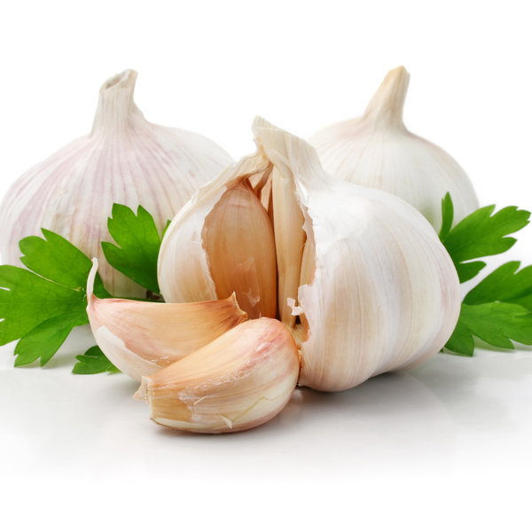

菲律賓燒乳豬 Lechón

菲律賓燒乳豬（Lechón），是一種源於西班牙的燒烤食物。而這種燒乳豬亦是西班牙系語國家，即西班牙及其前殖民地，如菲律賓、古巴、波多黎各、哥倫比亞、多米尼加共和國等國家的美食。Lechón這個字源於西班牙語的Leche，意思就是「奶」，所以Lechón就是指還在吃奶的乳豬。這種烤豬方式會先把乳豬去內臟，穿以米棒在炭火上烤熟，全豬上桌。不過在拉丁美洲，日常可以吃得到的烤豬已不再用乳豬而轉用中等大小的成豬；只有菲律賓式的燒乳豬，不單依然保留使用乳豬，還會在乳豬抹上一種由雞肝、大蒜、胡椒和醋調製成的醬料，成為了其特色，所以這種烤豬的方式，也被稱為肝醬烤乳豬。
探索美食背後有哪些特別食材
Slide
大蒜
大蒜，底下鱗莖味道辣，有刺激性氣味，稱為「蒜頭」，可作調味料，亦可入藥。蒜葉稱為青蒜或蒜苗，花薹稱為蒜薹，均可作蔬菜食用。大蒜是日常生活中不可缺少的調料，在烹調魚、肉、禽類和蔬菜時有去腥增味的作用。

胡椒
果實在曬乾後通常可作為香料和調味料使用。同樣的果實還是白胡椒、紅胡椒與綠胡椒的製作原料。乾燥的黑胡椒粉是各地的常用香料，自古以來，黑胡椒就因其在調味與醫學上的雙重價值而備受珍視。黑胡椒的香馥來自其含有的胡椒鹼。常簡稱作「胡椒」的黑胡椒粉，是全世界使用最廣泛的香料之一。
雞肝
雞肝是雞的肝臟。呈大小雙葉，葉面有苦膽和筋絡(加工時須摘去)。其色紫紅，質細嫩。因其豐富的營養和特殊功效，使得雞肝成為補血養生的最佳食物。